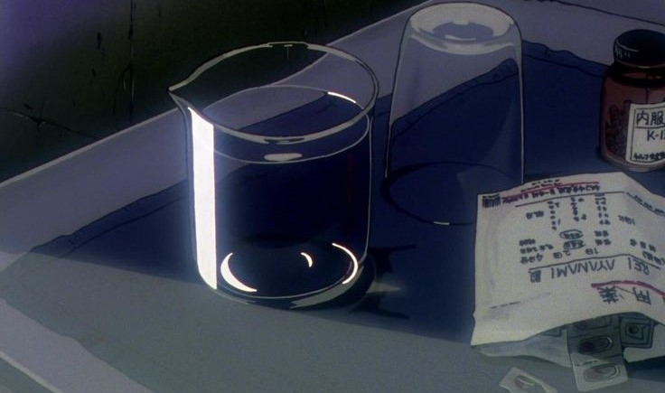
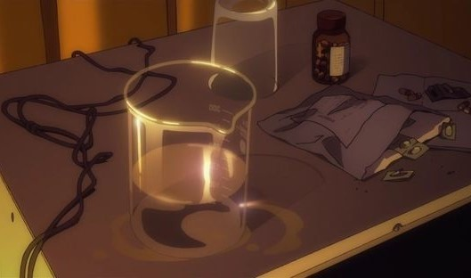
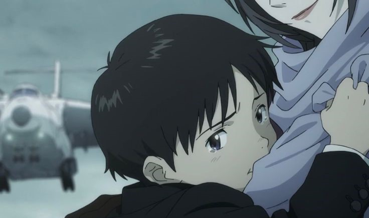
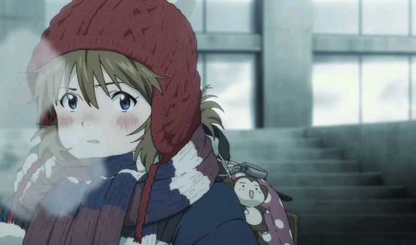
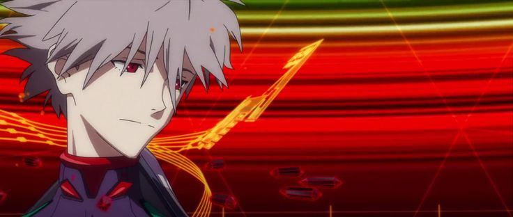
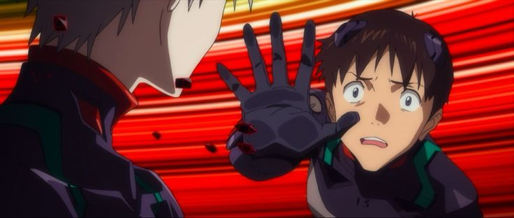

綾波レイの房間(舊版)
零似乎對生活打理和衛生觀念一無所知，這點反映在她住的公寓上——屋內既缺乏清潔又空虛，像是被主人忽視和放棄一樣。 零的公寓裡，桌上散落著許多繃帶和藥品。⠀⠀⠀⠀⠀⠀⠀⠀⠀⠀⠀⠀⠀⠀⠀⠀⠀⠀⠀⠀⠀⠀⠀⠀⠀⠀⠀⠀⠀⠀⠀⠀⠀⠀⠀⠀

綾波レイの房間(新版)
第6集結尾，兩人攜手擊敗使徒後，零在真嗣的建議下第一次對他露出了微笑，零的桌上出現了真嗣給他的walk man。 真嗣的行為對零的內心世界造成了極大的影響並改變了她，她也因此多次對真嗣表達出關心和感激之情。

童年(真嗣)
親眼目睹了母親碇唯在實驗當中消失的整個意外後，父親將真嗣交由他人照顧，於是兩人分居十年以上 雖然父親是他唯一的血親，不過他對父親卻沒有愛，只抱持著憎恨的情感。碇源堂是他兒子深刻內心衝突的根源。

童年(明日香)
她在幼年時目睹精神失常的母親自殺，因而造成她只能藉由向周圍的人展示自己的優秀，而確認自己存在意義。 其實她是一個想向母親撒嬌、哭喊的孩子，但在母親精神失常後，她決定不再哭泣、不再依靠他人，並努力讓自己表現得像個成年人。

為了遇見你而生
薰主動向孤獨無助的真嗣搭話，教他彈鋼琴，伴隨著反覆的鋼琴聯彈練習。 兩人建立了信任關係。之後，薰告知真嗣十四年間的變化，向他展示滿目瘡痍的世界真嗣得知真相後於是精神崩潰，薰鼓勵著真嗣，稱就像鋼琴聯彈一樣，兩人駕駛EVA第13號機去修復世界。然而， 修復世界的方案包含碇源堂設計的陷阱，最終，薰被迫以死阻止第四次衝擊。薰在臨死前不斷安慰真嗣，而真嗣只能看著薰受死卻什麼也做不了。

這次只想讓你幸福
系列終章《福音戰士新劇場版：終》揭示，渚薰在故事中多次輪迴，旨在讓真嗣獲得幸福。他亦是真正的第一使徒、SEELE和加持等人的高層，在察覺自己只是透過真嗣獲得幸福讓自己感到幸福後， 跟著加持離開，把剩下的事交給真嗣處理，跟著真嗣一起到達真嗣所創造沒有EVA的新世界。⠀⠀⠀⠀⠀⠀⠀⠀⠀⠀⠀⠀⠀⠀⠀⠀⠀⠀⠀⠀⠀⠀⠀⠀⠀⠀⠀⠀⠀⠀⠀⠀⠀⠀⠀⠀⠀⠀⠀⠀⠀⠀⠀⠀⠀⠀⠀⠀⠀⠀⠀⠀⠀⠀⠀⠀⠀